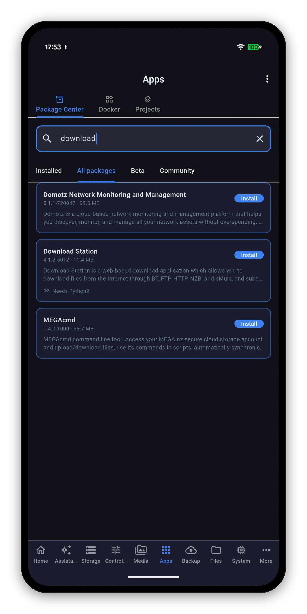
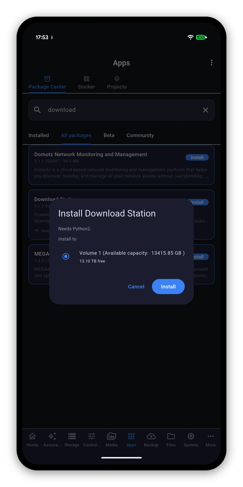
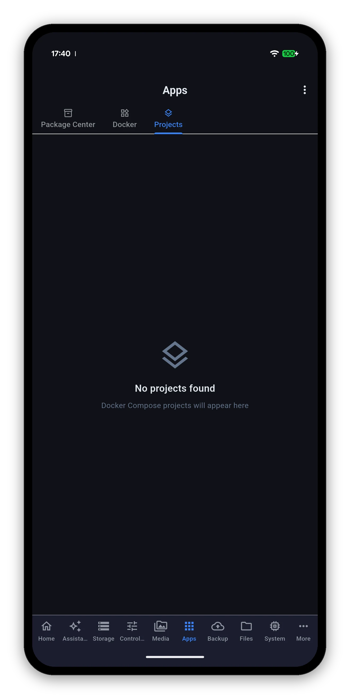

Four sub-views: Package Center for DSM packages, Docker for containers, Projects for Compose stacks, and Virtual Machines when VMM is installed.

The same four filters DSM has, and a search box across all of them.
| Filter | What it lists |
|---|---|
| Installed | What is on your NAS now, with its version, its size and a running indicator. |
| All packages | Synology's full catalogue for your model. |
| Beta | Pre-release packages. |
| Community | Packages from third-party sources you have added in DSM. |
Each entry carries its version and download size, its description, and any dependency it needs - Needs Python2, Needs SynoFinder - so a surprise second install is not a surprise.

Searching All packages for a package that is not installed yet.


A status header - running out of total - then every container the NAS has, in one list.
Up 2 hours (healthy).Container and stack logs behave the same way the system log does, and for the same reason.

A Compose project is several containers that belong together. The Projects sub-view treats them that way: start or stop the whole stack rather than hunting down each container in the Docker list and hoping you got them all.
Present when VMM is installed. Every virtual machine on the NAS, what it is doing, and the three power actions.
| Action | What it does |
|---|---|
| Start | Powers the machine on. |
| Shut down | Asks the guest operating system to shut down cleanly. |
| Force off | Cuts the power. Hold to confirm, because it is the equivalent of pulling the plug on a running computer - a tap is too cheap for that. |
Photos, Drive and Surveillance Station live view.